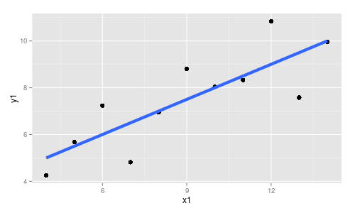
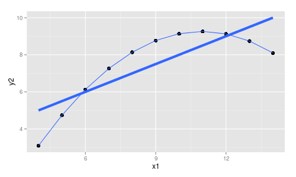
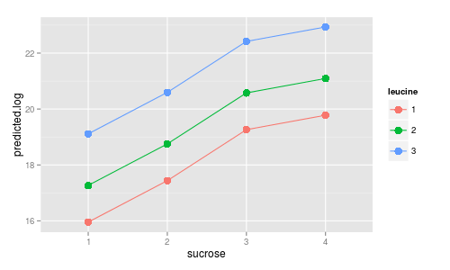
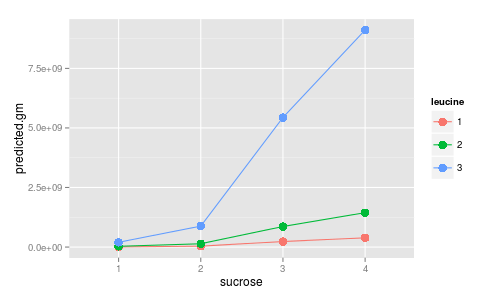
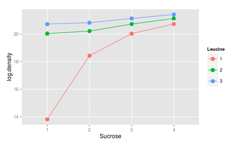
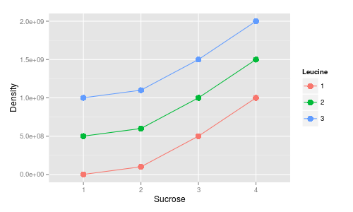

Today we will focus on something we have been blissfully ignoring - assumptions. When we use a linear model to represent our data, we should only be tempted to interpret the results if the model fits the data well.
|  |
The graph to the left shows a good fit of the model to the data. The linear regression model predicts that y1 will increase by a fixed amount with each unit of increase in x1 (as represented by the slope). The distribution of the data agrees nicely with this prediction, albeit with some random variation of data points around the line. |
|  |
On the other hand, the best-fit linear regression through these data points is not a good fit at all. The data are changing in an extremely predictable way, with a quadratic line fitting perfectly through the data points, but the linear relationship doesn't capture the nature of the response well at all. The regression line is identical to the one above, so it makes the same prediction about a constant increase in y2 per unit increase in x1, but this is wrong in two ways - slope is not constant, and y2 doesn't always increase as x1 increases. Interpreting a linear regression applied to these data would be a very bad idea. These two data sets are part of a famous set of four that all exhibit identical numerical output (identical ANOVA tables and coefficients) in spite of the fact that only the first data set, above, actually meets the assumptions of a linear model. |
Given these illustrations, it should be clear that we need to resist the temptation to interpret a model until after we make sure it actually fits the data.
As you learned in lecture, and from your reading, the distribution of the data is not the actual level of concern - rather, in order for a GLM to be considered a good fit to the data, the residuals have to meet certain distributional assumptions.
We will focus today on three assumptions of GLM:
-
Residuals must not exhibit any patterning - we have to meet the linearity and independence assumptions.
-
Residuals must be normally distributed (with a mean of zero).
- Residuals must have equal variances between categorical treatment groups, and along the predicted values of regression lines.
Today we will learn to use "model criticism" to find a model that meets
all of these assumptions, and is thus a valid basis for understanding
the experimental result.
Today's activity
Today we are going to analyze a data set presented in your book, which gives the results of a bacterial growth experiment. In this experiment, bacteria were grown in agar plates that contained all possible combinations of four levels of sucrose, and three levels of the amino acid leucine. Only one plate with each combination was used, so this is considered an "unreplicated" design, even though we get the "hidden replication" associated with our crossed design. Estimates of bacterial density (in cells per square centimeter) were made on four consecutive days.
Start a new project, in a folder called "assumptions", and start a new script for your commands. Download this data file, and import it as the R dataset "bacteria".
When you import, notice that there are three columns, day, sucrose, and leucine, that are grouping variables but that use numbers to identify the groups. The data type is shown under the name of the variable - all of the variables say "(double)", which is a double-precision floating point number (floating point is how computers represent numbers with decimals). Bacterial cultures often grow exponentially when they are first plated, and we can't expect density to scale linearly with day. Because of this, even though day could in principle be used as a numeric predictor we should treat it as a categorical factor to allow the means at each day to fall where they need to, rather than forcing them to follow a straight line.
So, R guessed we wanted these to be numeric variables, but it guessed wrong. We need to fix that.
Converting numeric codes to factors, graphing the data:
To convert day, sucrose, and leucine to factors we just need to do the following on each variable (with day as an example):
bacteria$day <- factor(bacteria$day)Repeat this for the remaining two variables, leucine and sucrose (not density, though - that's our response variable, and we need it to be numeric).
We can make a histogram of the density data to see how it is distributed. We will stick with "base" graphics instead of ggplot2 today, since the residual plots we'll be relying on later are all produced through base graphics.
with(bacteria, hist(density))
The data look very right-skewed. However, remember that the distribution of the data is not the important issue, it's the distribution of the residuals around the fitted model that determines whether we're meeting our normality and homogeneous variances assumptions. It's conceivable that the residuals will meet our assumptions even if the raw data plot does not, so we need to fit a model before we can decide if we have a distribution problem.
The model criticism process, in general
The process of evaluating whether we meet the assumptions of our model is "model criticism". The steps we will want to take in our model criticism approach will be:
1. Fit a model.
2. Examine the residuals for evidence of non-normality, heteroscedasticity (i.e. lack of homogeneity of variances), non-linearity, and lack of independence.
3. Make a change (add a predictor variable, an interaction term, or apply a transformation).
4. Repeat steps 1-3 until the assumptions are met.
Let's give it a whirl.
First analysis:
1. Fit a linear model of density, with day, sucrose, and leucine included, but with no interactions, like so:
dens.nointer.lm <- lm(density ~ day + sucrose + leucine, data = bacteria)
2. Next we need to plot the residuals for the fitted model. There are four standard residual plots that we will get if we use the command plot(dens.nointer.lm), but each will plot one at a time in a separate graph, and it would be convenient to have all four as panels in a single graph. We can do that, but with a little setup.
We set graphical parameters with the par() command. If you type par() in the console you'll see a long list of cryptic codes and numbers that set various default properties of R's graphs. We want to be able to restore to default settings when we're done, so use the command:
oldpar <- par()
to put a copy of all the settings into the object oldpar. Next, we want to set new parameters that a) plot all four graphs as panels in a single graph, and b) makes room for a label for the model that's being plotted. We do the first by setting the numbers of rows and columns in the plot with the mfrow parameter, and the second by setting the outer margin area with the oma parameter. The command is:
par(oma = c(0,0,3,0), mfrow=c(2,2))
The oma parameter is the outer margin in order bottom, left, top, right - we're adding some space to the top for the model to be printed. The mfrwo parameter gives the number of rows and columns of panels to be used in the plot. The par() command sets the parameters, so we don't need to assign to anything.
Now, to get the plots, use the command:
plot(dens.nointer.lm)
and you'll see all four of the residual plots in your graph window.
-
The first panel (upper left) gives a plot of residuals vs. fitted values. If you met all the assumptions, you'll see a random scatter of points along the length of the x-axis. The red line is a smoothed curve running through the residuals, rather than a theoretical expected value - if you meet the assumptions, this line will be flat and intersect y at 0.
-
The second panel (upper right) is a "normal probability plot" that graphs the standardized residuals (that is, the residuals expressed as number of standard deviations away from their predicted values) against the "theoretical quantiles" (that is, the number of standard deviations away from predicted values expected if the data followed a normal distribution). The dotted line shows where the points should fall if they are normally distributed. This is also referred to as a "Q-Q plot".
-
The third panel (lower left) is a "scale-location" plot, which shows the square root of the absolute value of the standardized residuals plotted against the fitted values. This too should show a random scatter, with a flat red line (although the line won't be at 0).
-
The final panel (lower right) gives standardized residuals for observations in each level of day (the first factor in the model). You should see an equal amount of scattering, centered on 0, within each sector of this plot.
You are encouraged to rely on these plots to decide whether you meet GLM assumptions eventually, but the decisions about whether assumptions are being met may seem highly subjective at this point. Although you are encouraged to take the book's advice to not be too picky, as you are learning what constitutes acceptable levels of deviation from assumptions you can use some numeric methods to double-check your impressions of the graphical diagnostics.
|
Potential violation of assumptions |
Quantitative test |
| Lack of normality |
Shapiro test of normality. The Shapiro test can be run through the Script Window with the command:
shapiro.test(residuals(dens.nointer.lm))
This command first extracts the residuals from dens.nointer.lm using the residuals() command, then feeds the residuals into the shapiro.test() command to test for normality. This is a hypothesis test, with the null hypothesis being that your data are normally distributed. Consequently, a p greater than 0.05 indicates normality, because retaining the null hypothesis means concluding your data are normal. |
|
Lack of homogeneous variances |
The Breusch-Pagan (BP) test for lack of homogeneity of variances is also available. Load the library lmtest, and then use the command: bptest(dens.nointer.lm) The null hypothesis for this test is that your data has equal variances, so a p greater than 0.05 indicates that you've met the assumption. |
3. At this point you should see that the model assumptions are not met, and we need to apply a treatment to try to fix the problem.
The first treatment we will apply is to add an interaction between
sucrose and leucine. Fit a model that still uses day as a block (that
is, with no interaction), but has a sucrose*leucine interaction. Call
the model "dens.inter.lm".
4. Produce your diagnostic plots for this model. You'll see that we're
not out of the woods yet, we need to try another treatment.
5. Now, fit a model using an interaction between sucrose and leucine in
dens.inter.lm, but with the log of bacterial density as the dependent -
call the model logdens.inter.lm. You can log transform density by simply
changing the dependent variable to read "log(density)" instead of
"density"; it isn't necessary to create a log-transformed density column
in your data set, you can let R do the transformation "on the fly". In
R, "log()" is the natural log, whereas "log10()" is the log base 10. The
base you use won't affect the result, so use the natural log.
6. Produce your diagnostic plots for this model. As your book points
out, after transforming the data and including an interaction, you have
produced a good looking set of diagnostic plots, with only minor
deviations from model assumptions. Confirm this impression with a
Shapiro test for normality of the residuals, and a BP test for
homogeneous variance.
Second analysis:
The first analysis just repeats the example used in your book. The book does a good job of explaining the steps and illustrating the process, but it does not address one important issue: which treatment for violations of assumptions should we try first? And, when the first treatment doesn't fix our problems, why should we apply the second treatment on top of the first, rather than applying the second treatment instead of the first?
Given the highly skewed distribution of the data, it's not surprising that log transformation was effective in helping us meet GLM assumptions, and it's entirely possible that that's all we need to do; the interaction between sucrose and leucine may be an unnecessary step (not that the interaction becomes non-significant after the data are log-transformed).
To address this question, fit one more model using the log of density, but with only main effects of day, sucrose, and leucine (call it "logdens.nointer.lm"). Produce the diagnostic plots for this model, and see whether there are distributional problems still evident. Run the BP and Shapiro tests to confirm your impressions of the graphical diagnostic plots.
You should find that log transformation is all that is needed to meet GLM assumptions.
What does it all mean? Interpreting analysis of log-transformed data.
We needed to log transform the data in order to meet the GLM assumptions. If we find significant effects in our ANOVA, we then have to figure out what the results are telling us. We want the interpretation to be consistent with the analysis we did, so we need to interpret the results in terms of the effects of leucine and sucrose on log-densities, rather than on densities.
For simplicity, researchers will often either base all of their interpretation of statistical results on the log scale, so that they don't have to translate back to the original scale of the data. Alternatively, when they interpret the result they will revert to using arithmetic means. Both approaches have the disadvantage that they do not draw a link between what is actually being statistically tested, and what is happening on the scale the data are actually recorded.
The better (but more complicated) approach is to translate the model of the data on a log scale back to the original scale of the data. Which means we have to understand what log transformation does to the model.
Transformation changes what type of mean the model is predicting
Linear models predict the arithmetic mean of y based on the values of the predictors. If we log-transform the data and then calculate a mean, the arithmetic mean of log-transformed data is a geometric mean in the original data units. When we use a GLM on log-transformed data, we are analyzing geometric means.
The back-transformation for log-transformed data is the exp() function, which is the base e raised to the power of the value entered into the parentheses. Let's look at a simple example of a model that only includes sucrose. The coefficients for this (significant) model are:
Coefficients:
(Intercept) sucrose2
sucrose3 sucrose4
17.443
1.484
3.307 3.823
As always, the intercept is the mean of the baseline group, which in this case is sucrose1. If we wanted to know what density this value of 17.443 was equivalent to, we just need to use exp(17.443), which is equal to a geometric mean density of 37618255 cells per ml.
Transformations change the hypothetical relationship between groups
The GLM equation, with its coefficients multiplied by variables added together, produces linear relationships between variables. However, when we use log-transformed data the additive terms on a log scale are multiplicative on the original data scale. Multiplication on a log scale is exponentiation on the original data scale - the slope coefficients multiplied by the log of variables become the exponents that we raise the variables to on the original data scale.
For example, to calculate the predicted bacteria density in sucrose level 2, we could calculate the predicted value on the log scale and back-transform, like so:
GMsucrose2 = exp(17.443 + 1.484) = 165917295
This is the predicted geometric mean of density for sucrose level 2.
Since adding coefficients on a log scale is equivalent to multiplying them on the original data scale, this calculation is equivalent to:
GMsucrose2 = exp(17.443)*exp(1.484) = GMsucrose1*GMsucrose2 = 165917295
So, additive terms on a log scale are multiplicative on the original data scale.
More complex example - a model with main effects of sucrose and leucine
If we fit a model of main effects of sucrose and leucine with log-transformed densities, we get the coefficients:
Coefficients:
(Intercept) sucrose2
sucrose3 sucrose4
leucine2 leucine3
15.953
1.484
3.307
3.823
1.314 3.157
Now, if we want to know the geometric mean predicted for sucrose 2 and leucine 2, we would either calculate:
GMsucrose2, leucine2 = exp(15.953 + 1.484 + 1.314) = 139141227
or we would calculate the exp of each of these and multiply them together:
GMsucrose2, leucine2 = exp(15.953)*exp(1.484)*exp(1.314) = 139141227
What is an interaction on a log scale?
Note an important, but subtle, point here: when we learned about interactions we saw that they were modeled by multiplying the two predictor variable values together and then multiplying the product by a coefficient. In other words, independent (main) effects of predictors were additive, and interacting effects were multiplicative. Now, though, when we use log-transformed data the additive (main) effects on a log scale are actually multiplicative effects on the original scale of the data.
Why is this important? Remember that lines that converged, diverged, or crossed on an interaction plot are an indication of an interaction. In the absence of an interaction, the additive main effects gave us parallel lines. Let's look at how a model with only significant main effects of leucine and sucrose on a log scale looks in the original data units.
|  |
Fitting the model to log-transformed data gives us significant main effects of sucrose and leucine, but the interaction isn't significant. A model with only main effects predicts parallel lines for the effect of sucrose at each leucine level because (for example) moving from leucine level 1 to leucince level 2 increases the predicted log density by 1.314 units, and from leucine1 to leucine3 the effect is to increase by 3.157 units, no matter the sucrose level. The leucine 2 line is thus always 1.314 units above leucine level 1, and leucine 3 is always 3.157 units above leucine 1, which gives parallel lines. |
|  |
We can show what the graph above looks like in the original, linear scale of the data by taking the exp() of each mean on the graph. Each dot is a back-transformed mean log-density, so they are now geometric means of density (thus the label "predicted.gm" on the y-axis). You can see that the lines are no longer parallel when we graph the model on the scale on which the data were actually measured. So, our additive main effects on a log scale are multiplicative in reality, and the lines diverge instead of being parallel. Which is a problem, because we are supposed to interpret non-parallel lines as interactions, but our analysis says there is no interaction.
|
The way to understand these two graphs is that the model does, in fact, represent a constant effect of each sucrose level and each leucine level, both on the log scale and the original data scale, but on the original data scale main effects are constant multipliers, rather than constant additive effects. So, to predict the geometric mean density for leucine level 2 you multiply the geometric mean density at leucine 1 by exp(1.314) = 3.721 to predict the geometric mean density at leucine 2, regardless of the sucrose level. And, to predict the geometric mean density at leucine 3 you would multiply the geometric mean of leucine 1 by exp(3.157) = 23.5, no matter the sucrose level. If there was an interaction between sucrose and leucine on a log scale, the multiplier needed to move from sucrose level 1 to sucrose level 2 would be different for each leucine level.
|  |
What if we log-transformed our data and saw this? On a log scale, we clearly have an interaction between leucine and sucrose. Much of the time when you back-transform you will find lines that are not parallel on a linear scale either, but this example was devised specifically to show you that it is possible for lines that are not parallel on a log scale to be...
|
|  |
...parallel on the linear, back-transformed scale. And this is correct - as a multiplicative effect, you need to multiply the geometric mean density at leucine 1 by a different amount to get the geometric mean for leucine 2, depending on the sucrose level
Transformation doesn't change the ordering of the data values, just the spacing between them, so if the lines cross on a log scale they will still cross on a linear scale. Also, log transformation compresses the spacing between big numbers and stretches spacing between small numbers - if the pattern we saw was that the line on top (leucine 3) diverged upward at high sucrose levels, leucine 3 would also diverge (much more dramatically) on a linear scale. |
The point of these examples is twofold:
- It is very important to match the way you interpret the data to the way you analyze the data. If you use a log transformation in your GLM, interpret your results with respect to the geometric means of the data.
- Interpret main effects as constant multipliers, and understand that they don't produce parallel lines on a linear scale.
- If you get interactions on a log scale, plot the back-transformed means to see what the patterns look like on a linear scale.
- If you don't do these things, and instead base all of your interpretation on tables and graphs of arithmetic means assuming parallel responses, you may reach conclusions that are not supported by your own analysis.
- Graphs are your friend. Hopefully you can see how the graphs change as you move between log- and linear-scaled data - even if the mathematical explanation for why this happens is a little muddy, the graphs show what's going on. Consequently, back-transforming your group means and graphing the back-transformed values will help guide you to the correct interpretation. Graphs are therefore not just a tool for communicating results to others, they are a tool that you use to understand your own analysis
R provides some nice utilities that facilitate this translation between model results and real-world interpretation. You will learn about those next.
Getting the statistics you need to interpret model results
With more complex models with multiple predictors and interactions it becomes tricky to back-transform geometric means by hand, so it's best to let R do the work for you. We should also use error bars on our graphs of means (such as 95% confidence intervals), and it's important to calculate the limits on a log-scale and then back-transform them (if you back-transform the standard errors, then calculate intervals in the original scale of the data, you won't get the right numbers). The "effects" package does this work for us. We will just get the back-transformed geometric means and 95% confidence intervals for the model you fitted for the second analysis, but this approach can be used for any fitted model, including ones that include mix categorical and numeric predictors.
1. Load the effects library:
library(effects)
2. Get the geometric means for the main effect of leucine with the command:
data.frame(effect("leucine", logdens.nointer.lm, se = TRUE, transformation = list(link = log, inverse = exp)))
The parts of this command are:
- The command effect() does the calculation. It takes as arguments:
- The name of a term for which we want predicted geometric means, which is leucine in this case.
- The name of the model in which leucine appears, which is
logdens.nointer.lm.
These first two arguments are required for the effects() function to run. With just these two things specified, we would get predicted arithmetic means on a log scale. We are using two optional arguments to get additional output, in the format that we want.
- Setting se = TRUE produces standard errors and confidence intervals.
- The transformation statement tells effect() to produce the predicted means in the back-transformed units - the transformation statement has to be a list with two elements named "link" and "inverse". The link function is the name of the original transformation, which is log for us. The inverse is the function that reverses the transformation, which is exp.
- The data.frame() function wrapped around effect() reports geometric means, standard errors, and the lower and upper limits for the 95% confidence intervals presented in a nicely formatted table, with each row pertaining to a leucine level.
3. Get all of the effects from logdens.nointer.lm. The effect() command in step 2 just gives you the predicted geometric means and 95% confidence intervals for one model term at a time. Get the geometric means and 95% intervals for all of the effects in the model by modifying the command above to read:
allEffects(logdens.nointer.lm, se =
TRUE, transformation = list(link = log, inverse = exp)) ->
logdens.nointer.eff
This command uses allEffects(), which (you may have guessed) gives you all of the effects in the model instead of just one. Since we are asking for all effects, we dropped the "leucine" argument.
The object logdens.nointer.eff is an "effect list", which has named elements for each term in the model (day, leucine, sucrose). To get the predicted means for day, you would use:
data.frame(logdens.nointer.eff$day)
To get the predicted means for sucrose you would use:
data.frame(logdens.nointer.eff$sucrose)
And to get the predicted means for leucine...see if you can figure it out.
4. Plot the effects. To get plots of the geometric means with 95% confidence intervals use the command:
plot(logdens.nointer.eff, ylab = "Density")
This first plot command plots the bacterial density on the y-axis, with a different plot for each of the predictors in the model. The ylab = "Density" option specifies the label for the y axis. The default option is to use a log-scale y-axis to match the log link we used. A log-scale axis uses data labels that are in the original data units, but uses their logarithms to determine the spacing (this is why big numbers are compressed and smaller numbers are stretched apart on the y-axis).
To plot the log-transformed numbers on the y-axis, the command would change to:
plot(logdens.nointer.eff, ylab = "ln Density", type = "link")
The y-axis now shows the logs of the data values, instead of their original units. We needed to change the y-axis label to reflect what the numbers are showing.
And, finally, to plot geometric means of densities on a linear y axis, change the command once again to:
plot(logdens.nointer.eff, ylab = "Density", type = "response")
The geometric means of densities are plotted, on a linear y-axis - this makes it easier to see the magnitude of change in densities, and to see the asymmetry in the confidence intervals.
Wrapping up with some advice
You used model criticism to produce two different models, each of which satisfied the assumptions of GLM. So, which is the better way to proceed? It depends on the goals of your analysis, but a few things to consider:
-
If the goal is to develop the simplest model that meets GLM assumptions, trying single treatments to fix distributional problems is better. Use one treatment at a time, and only use combinations of two or more if single treatments aren't effective.
-
If you designed the experiment to test for main effects and interactions between variables anyway, include the interaction as your first attempt to fix distributional problems. If the problems aren't fixed, keep the interaction in, and log-transform.
-
If you find that either a transformation or an interaction term works equally well for meeting GLM assumptions, be aware that this is because additive effects on a log scale are multiplicative on a linear scale - the interactions you are measuring are due to constant multiplicative effects. Either way of representing them is fine, but be aware that is the reason either will work.
That's it! Answer the questions on the assignment sheet, which is due next Wednesday.